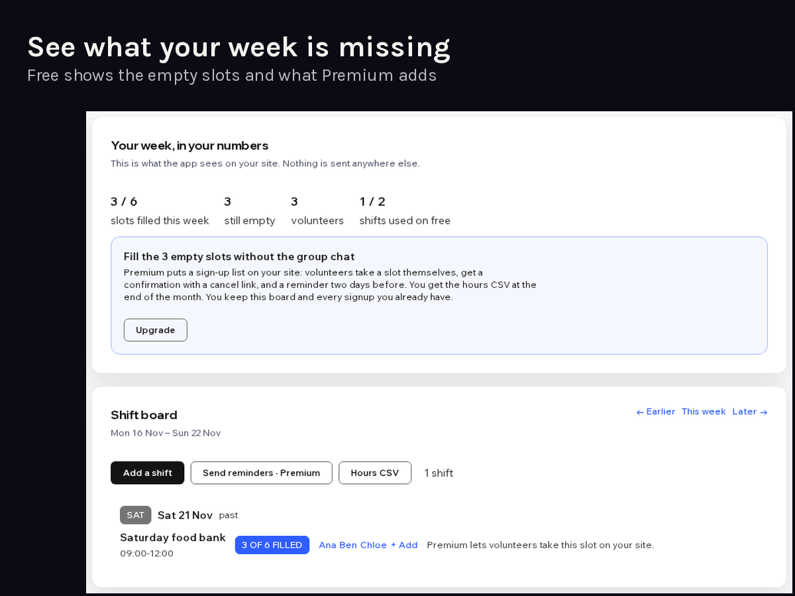

Volunteer Shifts: Signup Sheet
Fill every shift without the group chat
- Weekly shift templates with places needed
- Volunteers sign up themselves on your site
- A reminder email two days before the shift
- Mark going, cancelled or no-show; hours CSV

What it does
Every food bank, shelter, church and school fills the same weekly shifts, and the filling usually happens in a group chat: who is on Saturday, who dropped out, who still needs a reminder. A missed shift is a closed door.
The app keeps the shifts on one board. Add a shift with its day, time and places needed, and it repeats every week. The board lists the next four weeks with the places filled and the places still empty on every date, so the month is one glance away.
The sign-up widget goes on a page of your site, and volunteers take a place themselves with a name and an email, no account. Each one gets a confirmation and a cancel link that opens without signing in, so a volunteer who cannot come frees the place instead of vanishing from the chat. A reminder email goes out two days before the shift.
Afterwards, mark each person going, cancelled or no-show, and download the hours CSV at the end of the month.
The free plan holds two shift templates and one week of board. Premium adds unlimited templates, the four-week board, sign-up from your site, reminders, no-show marks and the hours CSV. Premium is $9 a month, or $7.20 a month billed yearly, after a 14-day free trial.
Price
Free
Premium
$9/month, or $7.20/month billed yearly ($86.40/year), 14-day free trial
- Unlimited shift templates and the 4-week board
- Sign-up from your site, with reminders
- No-show marks and the hours CSV